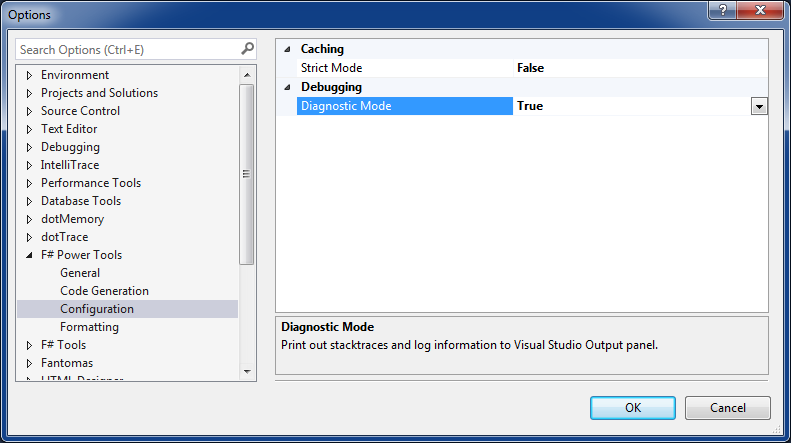

FAQ - Frequently Asked Questions
VFPT is slow, what can I do to speed it up?
Our suggestion is to disable automatic features including
- Highlight references
- Indent guides/Depth colorizer
- Syntax coloring
- Gray out unused declarations
- Gray out unused opens
- Implement interface
- Record stub generation
- Union pattern match case generation
- Resolve unopened namespaces
- Task List comments
- Quick info panel
and enable them one by one to identify the features causing slowness. If you found a scenario that is slow, please let us know on the issue tracker.
Why is unused declaration option divided into two separate options in v1.6.0?
There are some performance penalties on checking unused declarations. Until the performance issue is sorted out, we divide the option into two settings to provide more granularity to users. The new options are disabled by default.
What is Strict mode? When should I use it?
FSharp.Compiler.Service (one of our main components) makes extensive use of caching.
In Strict mode, cache invalidation is done more aggressively.
Consequently, type checking results are more up-to-date but there might be performance degradation.
This setting is disabled by default.
We recommend to use it if there are frequent intermittent errors on syntax coloring.
What is Diagnostic mode? When should I use it?
If Diagnostic mode is on, logging information will be dumped into Visual Studio Output window (particularly on F# Power Tools tab). This information is valuable for bug fixing purpose. If you encounter any bug, please take some time to record diagnostics information and include it for bug reports.

Why are object identifiers in members marked as unused?
If object identifiers (x in x.Member) aren't referred anywhere in the member bodies, they are understood as unused values.
In order to fix it, we recommend to use __ or any identifier with _ prefix (_x for example).
Why are my VFPT key bindings overridden by ReSharper?
If you are using Visual F# Power Tools along side with ReSharper 8 or below, there is a known issue where some F# commands are hidden by ReSharper. You can workaround by disabling the ReSharper option "Hide overridden Visual Studio menu items" (ReSharper -> Options -> Keyboard & Menus).